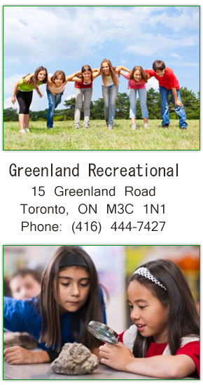

Programs And Fees
GRASP strives to keep the cost down for all our clients. As a not-for-profit, we ensure all funds are invested back into our program to enhance children learning experiences and secure educated qualified staff. Fees are set out each year based on the budget and grants received from the city and other avenues. All families can expect a minimum 2% annual increase in fees. A family that has more than one child in the Program will be given a 5% family discount. This is for full-fee families, during the school year only. Families who are eligible for CWELLS are not eligible for the family discount.
GRASP provides before and after school care for children attending Greenland Public School and other local schools as long as busing arrangements are made through the school or private company. School buses pick up from our location going to Three Valleys Public School, St. Bonaventure Catholic School, Broadlands Public School, Dunlance Public School and Norman Ingram Public school is currently available. (arrangements though the individual schools)
Children in attendance are offered 3 snacks a day. One in the morning, one after school and a lite snack just before the end of the day. On PA/PD Days and any days we run full time programs including trips and outdoor adventures or in house programs, children are required to provide their own lunches. Lunches must be PEANUT/NUT FREE and must comply with our Anaphylaxis policy.
We are extremely lucky to have access to the schoolyard and fields that include a baseball diamond, basketball court and a soccer field that leads into the valley, with a world of explorations and fun to be had. We also visit other local attractions such as the shops of Don Mills and the library. Local outings may occur from time to time with or without prior notice and shall be deemed normal daily activity. Notices will be sent home with consent forms for special trips and events, which involve public or other motorized transportation for permission.
GRASP program plans contain age-appropriate activities in order to keep the children engaged and from time to time may engage in some age-appropriate risky play activities as promoted in childhood development. In order to fully appreciate the program and give all the children the equal opportunity to participate in the planned activities, it is expected and highly recommended all children be in care no later than 9:30 am on non-instructional days such as PA day and summer camp. Any community outing or walks will not depart prior to 9:30 am. Once the group leaves the center for a walk, community outing or field trip, the staff is not permitted to release or accept your child. You must drop off or pick up your child before or after the outing on Greenland property. Children will only be accepted in their designated classes for ratio and safety purposes.
Access, Equity & Inclusion
GRASP upholds and supports the right to equal access to the program without discrimination and regardless of ethnic origin, race, creed (religion), abilities/disabilities, family and/or socio-economic status. GRASP aims to include all children within our program and services including those children requiring extra support or having special needs. Our full access, equity and inclusion policy is available in the GRASP Policies and Procedures manual.
GRASP is committed to excellence in serving all clients including people with disabilities. We are committed to ensuring that participants and/or their parents/guardians with disabilities receive accessible programs and services with the same quality and timelines as others do, wherever possible. GRASP supports the full inclusion of persons with disabilities in all our programs and services as set out in the Canadian Charter of Rights and Freedoms, Ontario Human Rights Code, the Ontarians with Disabilities Act (ODA), 2001 and the Accessibility of Ontarians with Disabilities Act (AODA), 2005.
Currently, School buses pick up from our location going to
- Three Valleys Public School
- St. Bonaventure Catholic School
- Broadlands Public School
- Dunlace Public School
- Norman Ingram Public school